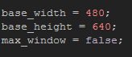
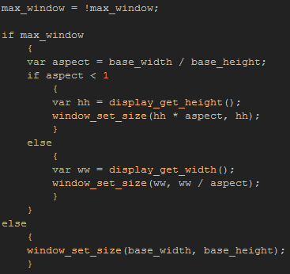
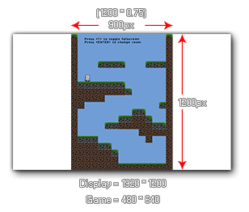

Tutorial
Page 3 of 15
Maximise The Window
Another way to scale your game to fit the users monitor, is to scale the game window to a maximum fit based on the users display width and height. For this we need to get the aspect ratio of the game room,
and then adjust the windows width and height proportionally based on that. Note that this part of the tutorial does not take views into account and is purely for scaling the whole room to fit the display.
This is useful for games that don't use views, but it also shows some of the fundamental points related scaling and aspect ratio.
The first thing we are going to do here, is prepare some variables which we will need, so open up "obj_Windows_Maximise_Window" and add a Create Event to it with the following code:

Note that you could make the base width and height as Constants, which means that they will be highlighted in the script editor and also compile faster, however for this tutorial variables are fine. The
other variable we have defined will be the "toggle" variable to control the changes to the window size.
Now (as before) add a Key Pressed Event for the digit 1 and add the following code to that:

As with the fullscreen toggle, the first thing we do is negate the current boolean value of the control variable, which we then check to see if it's fullscreen (true) or not (false). If this variable is true, we then have to
scale the game window to the maximal width or height of the display.
Why width or height? Well, this will depend largely on your game, since a landscape game will need to scale to the width of the display and a portrait game will need to scale to the height of the display,
otherwise you may have parts of the game window off the screen entirely!
To find which is appropriate, the first thing we have to do is find the aspect ratio of our game room. To do this we simply divide the base width by the base height, which (in the case of this example) will
give us an aspect ration of 0.75.
We then check this ratio to see if it is less than 1 or not, as that will also tell us whether the game is in landscape or portrait, and then run either of two code blocks depending on this result. If the aspect is less
than one, it means our game room is portrait and so we need to base our calculations on the base height of the room, and if it is greater than 1 then we need to use the width.
If the room is taller than it is wider (portrait) then we resize the window to the display height, and set the width to be the display width multiplied by the aspect ratio. Why? Well, we want to keep the proportions
correct, otherwise the game will look squashed or stretched, which is why we get the aspect ration of the game room. The aspect ratio never changes no matter how we scale the game, which means that
if we know that the width is three quarters the height, we simply have to multiply any height to get the correct width (and vice versa).
Let's look at an example of this to make sure everything is clear. If you have a monitor that is 1920 x 1200, and want to make the game window stretch to fit the maximal size, then we first get the aspect ratio of
our game room (which in this case we know is 0.75). Then we set the window to the height of the display, and the window width to 1200 * 0.75, which is 900. So our final game window is 900px by
1200 px. This will also work for games that are wider than taller, but instead of multiplying the maximal height, we must divide the maximal width.

You can now run the game, and press <ENTER> to take you to the second Windows example room (or simply change the room position in the IDE so that room two is at the top of the asset list in the resource
tree) and you can test this and see that the game window does indeed scale to the maximum height of the display (and back again) when you press 1, and if you edit the room in the room editor to be 640x480, you
can also test to see that the scaling works on landscape games too.
Click on the Next button to go to the next page of the tutorial.